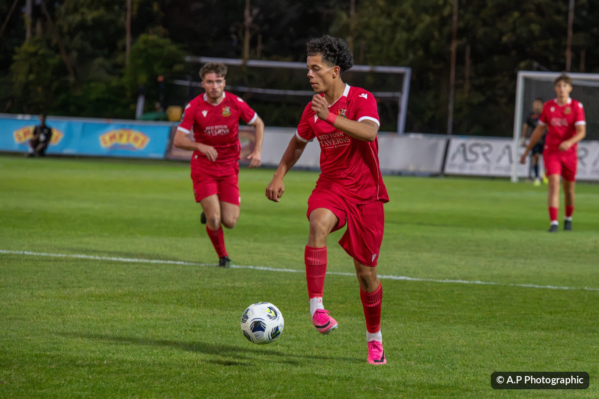
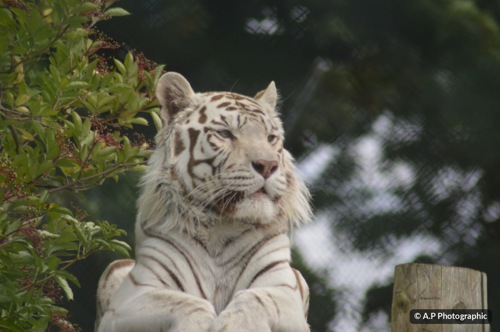
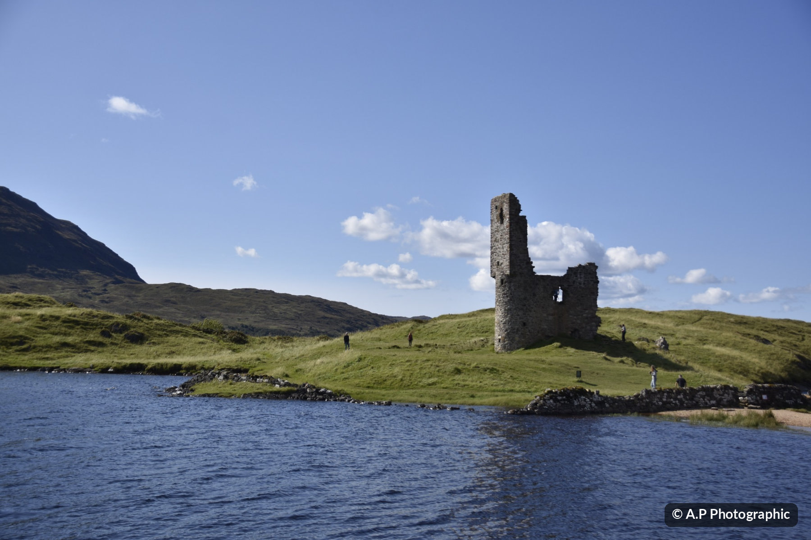

Photography made clearer
Depth of Field
Simulator.
Have a play with the camera settings and see how they change your photographs — from what's sharp to background blur, exposure and colour. When you're ready, explore the other lessons and try the photography quiz.
Camera settings
Fine-tune your shot
Focus preview
Original A.P Photographic image · blur is illustrative
How are these results calculated?
Standard thin-lens depth-of-field equations are used. Hyperfocal distance: H = f² / (N × c) + f, where f is focal length, N is f-number and c is the sensor-format circle of confusion. Near and far limits are calculated from H and the subject distance. Results are estimates; acceptable sharpness depends on print size, viewing distance and personal judgement. The photographic preview and zone diagram are conceptual rather than physical-scale or calibrated lens simulations.
Photography Learning Lab.
See the effect first, then understand the setting. Explore eight hands-on tools using photographic examples, with extra topic notes below to help you learn at your own pace.
Free learning tools, copyrighted photographs. All example photographs © 2026 A.P Photographic — all rights reserved. Please do not download the photographs for reuse, copy or republish them without permission. Camera and lighting effects are teaching illustrations, not original camera settings. Image usage details ↓
Control the exposure triangle
Change one setting at a time — or balance all three.
Exposure preview
Same sports photograph · illustrative exposure and ISO noise.

Educational approximation: the preview shows relative brightness and an illustrative noise layer. A real exposure depends on the scene's light and metering; ISO amplifies the captured signal rather than increasing light entering the camera.
Freeze action or show motion
Change shutter speed while tracking a moving footballer.
Movement preview
Artificial horizontal motion blur on a photographed footballer.
Blur is a visual demonstration, not a prediction for every subject. Real motion blur depends on subject speed, camera tracking, focal length and distance. Exposure brightness is held constant here so you can study motion separately.
Get the colour right
Match camera white balance to the colour of the light.
White balance preview
Compare an approximate warm or cool colour cast.

Original photos are used as a base for simulated lighting conditions — the images were not necessarily shot under the selected light sources. The Kelvin control describes the camera setting: higher camera WB Kelvin produces a warmer correction for the same light. Real colour also depends on tint, mixed lighting and the original photograph.
Understand your histogram
See how exposure redistributes dark and bright pixels.
Live brightness histogram
Calculated from the example JPEG's pixel values in your browser.

Histogram values use the supplied JPEG and simulated display brightness, not camera RAW sensor data. Edge percentages measure pixels very close to black or white, not exact RAW clipping.
Learn exposure compensation (EV)
Make your metered photo brighter or darker — in thirds of a stop.
Each +1 EV means twice the exposure; each −1 EV means half. This is different from changing white balance.
Before and after
The same photograph, showing the approximate effect of EV compensation.
Important: EV compensation shifts the camera's metering target, but how it is achieved depends on exposure mode and camera settings. The shutter-speed example assumes Aperture Priority (A/Av), fixed aperture and ISO, and a starting meter reading of 1/250s. In full Manual mode with fixed ISO, EV compensation may only move the meter indication and not change the actual exposure. The images and histograms here are JPEG-based teaching illustrations, not predictions of RAW highlight recovery.
Explore the colour wheel
Pick a hue on the wheel or use the slider. Watch how a colour combination changes.
This is a digital RGB hue wheel used for choosing photographic colours. It isn't the same as the traditional red–yellow–blue paint wheel.
How colours work together
Use colour to lead the eye and create a mood in your photographs.
Colours opposite one another create contrast. Colours close together often feel more harmonious.
Colour wheel basics
- Hue is the actual colour — for example red, yellow or blue.
- Saturation is how vivid or muted the colour looks.
- Brightness / lightness controls how dark or light it appears.
- Warm colours (reds, oranges and yellows) often feel energetic; cool colours (blues and blue-greens) often feel calm.
Remember: White balance fixes the colour cast from your light source; colour harmony is a creative choice about the colours within your scene. You can use both together.
Colour relationships are creative starting points, not rules. The exact appearance also depends on lighting, display calibration, saturation and editing.
Try composing the shot
Choose a technique, then view the guide on one of my photographs.
Composition in the frame
Look at the photograph with and without the guide. What catches your eye first?
Rule of thirds
Divide the frame into nine equal sections. Try putting a strong subject near one of the four intersections, or set a horizon along a horizontal third.
Try it: Compare a centred horizon with a lower one. Which gives the sky more space?
Remember: These are guides, not rules. The lines are illustrative overlays, not automatically detected edges or subjects. Cropping here changes the displayed framing of the same photograph, not the original file.
Read the composition study guide →Photography challenges
Ten questions chosen randomly from a bank of 40. Each answer comes with a short explanation.
The quiz runs entirely in your browser. No account, tracking, submission or server is needed. Optional best-score storage remains on your own device.
Learn a little more
The photography study guides.
Not sure why an answer was right or wrong? These beginner-friendly notes cover the topics in the 40-question quiz. Open any subject, read the explanation and try the linked simulator where there is one. They're here for learning, not memorising.
Depth of field and lensesAperture, focus distance, near limit and focal length
Depth of field is the distance range that looks acceptably sharp in a photograph, either side of the point you focused on. It isn't an instant line where everything becomes completely blurred.
- Aperture: f/2 is a wide opening that often gives a blurred portrait background; f/11 is narrower and usually keeps more of the scene looking sharp. A small f-number means a large opening.
- Distance: getting closer to your subject reduces depth of field. Moving the subject farther away from the background often makes that background softer.
- Focal length: going from 50mm to 200mm from the same camera position gives a tighter frame. If you change position to keep the same framing, the blur relationship is more complicated.
- Near limit: the nearest distance judged acceptably sharp at those settings; it isn't the lens's minimum focus distance.
Shutter speed and movementFreezing sport, waterfalls, tripods, panning and stops
Shutter speed controls how long light is recorded. A short exposure helps freeze movement. A longer exposure can show motion or cause unwanted camera shake.
- Sport: 1/1000s is a useful starting point for a fast footballer, depending on the action, light and camera tracking.
- Waterfalls: an exposure around 1 second can turn moving water smooth, especially with a tripod.
- Tripod: helps keep the camera still when slow shutter speeds would otherwise blur a stationary scene.
- Stops: 1/500s is half the exposure time of 1/250s, so it records half as much light when other settings stay unchanged.
- Panning: follow a moving subject during the exposure; a slower shutter can streak the background. You don't need a separate panning image to learn the technique.
ISO and image noiseBrightness, two-stop changes and low-light choices
ISO tells the camera how it should handle the light signal it has captured. Raising ISO often helps make the resulting image brighter, but it doesn't let more light through the lens.
- One stop: ISO 100 → 200. Two stops: ISO 100 → 400.
- Bright outdoors: starting near base ISO (often 100) is sensible when enough light is available.
- Floodlit football: using a higher ISO may let you keep the fast shutter speed needed to freeze players.
- Noise: can become more visible in high-ISO and low-light pictures. Underexposure can also make noisy shadows.
White balance and RAWTungsten, shade, Kelvin, RAW and neutral grey cards
Different lights have different colours. White balance adjusts how the camera renders those colours, helping a white or grey object look neutral rather than orange or blue.
- Warm tungsten bulbs: around 3200K is a useful camera white-balance starting point.
- Open shade: can look blue; a shade preset often applies a warmer correction.
- Camera Kelvin: on a camera WB control, a higher Kelvin setting usually renders a given scene warmer, to compensate for cooler light.
- RAW versus JPEG: RAW allows more flexible white-balance adjustments later; a processed JPEG has less freedom without degrading colour.
- Grey card: photograph a neutral reference under the actual light to set a more consistent custom WB, particularly with mixed light.
Reading histogramsShadows, highlights, clipping and RAW preview differences
A histogram plots how many pixels fall at different brightness levels. The left represents dark tones, the centre midtones and the right bright tones.
- Left edge: very dark pixels or possibly lost shadow detail. Right edge: bright pixels; a big pile-up at the edge can mean highlight clipping.
- Not always centred: an image of snow naturally leans bright, and a night scene may lean dark. Neither is automatically wrong.
- RGB histograms: separate colour-channel information can reveal clipping hidden by a brightness-only histogram.
- RAW warning: most camera playback histograms are based on processed previews, so contrast and picture styles can make them differ from what remains recoverable in RAW.
Metering and EV compensationSnow, dark stages, A/Av and Manual mode
Exposure compensation tells the camera to aim brighter (+) or darker (−) than its meter's initial suggestion. One stop, or 1 EV, doubles or halves the exposure amount.
- Bright snow looks grey: positive EV can help keep the scene bright instead of letting the meter darken it.
- Dark stage looks washed out: negative EV may protect the intended dark mood.
- Aperture Priority (A/Av), fixed ISO: +1 EV often makes the camera choose a shutter time twice as long, where possible.
- Full Manual, fixed ISO: compensation may shift the meter indicator without changing shutter, aperture or ISO. With Auto ISO enabled, behaviour may differ by camera.
- Zero on the meter: is a starting point, not a guarantee that your artistic exposure is right.
Using a speedlightFlash output, inverse-square law and beam zoom
For manual flash, power sets the amount of light emitted, distance affects how much reaches your subject, and flash zoom changes how widely the beam spreads.
- Power: 1/4 → 1/8 sends approximately half as much flash energy — one stop less.
- Distance: doubling the flash-to-subject distance reduces direct illumination to roughly one-quarter (the inverse-square rule), ignoring reflections and modifiers.
- Flash zoom: 24mm is wider; 105mm concentrates light into a narrower beam. It is a flash-head setting, not a change to the camera lens.
- Subject too bright: first try lowering manual flash power, increasing distance or changing the modifier.
Exposure stops and the meterAperture stops, shutter stops and what 0 EV means
A stop is a doubling or halving of recorded light or a related exposure setting. Learning stops makes it easier to balance your camera controls.
- Aperture: f/4 → f/5.6 lets through approximately half as much light. It also changes depth of field.
- Shutter: 1/250s → 1/500s halves exposure time and can freeze more action.
- ISO: 100 → 200 makes the output about one stop brighter at the same shutter and aperture, without adding captured photons.
- Balancing: changing f/4 to f/5.6 and shutter 1/500s to 1/250s can roughly preserve overall exposure while affecting depth of field and motion.
Autofocus for still and moving subjectsSingle AF, continuous AF and focus-point placement
Autofocus modes decide whether the camera keeps adjusting focus after it has found your subject.
- Stationary portrait: Single AF (Nikon AF-S / Canon One-Shot AF / Sony AF-S) is often a straightforward starting point, with the focus point over the near eye.
- Footballer coming towards you: Continuous AF (Nikon/Sony AF-C / Canon Servo AF) can adjust focus while the player moves.
- Tracking: subject detection and tracking can help, but the camera can still grab the wrong person or background.
- Focus point: place it deliberately. A fast shutter cannot rescue a photograph focused on the wrong subject.
Composition and leading linesRule of thirds, leading lines, symmetry, framing, negative space and movement
Composition is about where you place your subject and everything around it. It helps a viewer understand what matters first, then where to look next. There is no single correct formula — these ideas are starting points you can experiment with.
1. Rule of thirds
Imagine dividing your photograph into nine equal rectangles with two vertical and two horizontal lines. Placing your subject near an intersection can create a balanced but less formal result. In the castle photograph, compare putting the horizon across the middle with putting it on the lower third. The sky tells more of the story when it has more room.
2. Leading lines
Paths, fences, riverbanks, shadows and rows of trees can gently lead your eye towards a subject or into the scene. Use the woodland path as an example: notice how the edges of the track guide your attention into the distance. A leading line doesn't have to be perfectly straight.
3. Centred composition and symmetry
Sometimes a centred subject is stronger than the thirds. Portraits, reflections, doorways and repeating patterns can look deliberate and calm when centred. Check that the background doesn't pull attention away from the subject. Symmetry is about matching shapes or visual weight — it needn't be mathematically exact.
4. Natural framing
Use branches, windows, doorways or dark edges to frame a subject. It can add depth and make the subject more noticeable. Try looking through a gap in foliage instead of photographing everything straight on. Don't add a frame just for the sake of it.
5. Negative space
Empty-looking areas such as sky, water or a plain wall can be useful. Space can show scale, add calm or help an isolated subject stand out. What you leave out is just as important as what you include.
6. Leave room for movement
For football, wildlife or moving vehicles, it often feels more natural to leave some space in front of the subject, in the direction they are travelling or looking. You can deliberately break this idea when you want a more tense or tightly cropped photograph.
Before pressing the shutter
- Subject: What do you want people to notice first?
- Background: Does anything appear to grow out of the subject's head or distract from them?
- Horizon: Does it look level, and where does it sit in the frame?
- Edges: Have you accidentally cut off something important?
- Viewpoint: Would moving left, right, higher or lower improve the image?
Try it yourself
Simple Flash Simulator.
Change just three speedlight settings to explore how they could light a player portrait. This is an illustrative effect applied to an existing photograph.
Your flash settings
Drag any slider to see the difference
Higher power makes the flash-lit area brighter.
Moving the light closer makes it brighter; moving it away makes it darker.
A wider setting spreads light over more of the scene. A longer zoom concentrates the beam into a smaller area.
Watch the light change
A.P Photographic player portrait · simulated light
How to use this: Flash zoom is the beam angle of the speedlight head, not the focal length of the lens attached to your camera. For this demonstration, camera exposure and room lighting stay fixed. The visual is a simplified illustration; real light also depends on the flash model, direction, modifiers and surroundings.
Learn the settings. Take the shot.
Use these free, interactive teaching tools to explore depth of field, exposure, shutter speed, colour balance, histograms, exposure compensation, colour relationships, detailed study guides, beginner challenges and flash. You can also compare portraits, sports or landscapes. A wider aperture (smaller f-number) generally reduces depth of field; stopping down and focusing further away generally increase it. Sensor format also affects conventional sharpness estimates. Save or share a link and your chosen settings will be included in the web address.
Designed as a photography learning tool by A.P Photographic. No account, cookies, tracking or camera access required.
Photography copyright & image use
The learning tools are free for everyone to use. You are welcome to explore the lessons, practise with the simulators and share a link to this website.
Photographs © 2026 A.P Photographic. All rights reserved. The photographs are not free-to-use images. The photographs may not be copied, reproduced, edited, redistributed, republished, sold or used on other websites or in promotional materials without prior written permission from A.P Photographic, except where permitted by law.
If you would like to use or license a photograph, please contact A.P Photographic. Simulator previews are educational illustrations; they do not represent the settings used to take the originals.